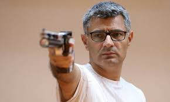

shooting, whether in sports, hunting, or military practice, is an activity that requires precision, control, and focus. It involves using firearms or other projectile-based weapons to hit a designated target, often at varying distances. Successful shooting hinges on a combination of physical skill and mental discipline, including steady hand-eye coordination, proper stance, breath control, and a calm mindset. Safety is paramount in all shooting activities, as responsible handling and awareness are crucial to prevent accidents. Whether for competition, recreation, or training, shooting is a skill that can be honed through consistent practice and attention to detail.
